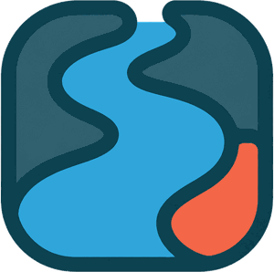

Current RiverFlowing
3.18 ft↑ Rising slowly
3.18 ft1,240 cfs
updated 18 min ago

Know what’s running well before you make the drive.
Every river here is researched by hand—gauges rated, hazards logged. Request a river
